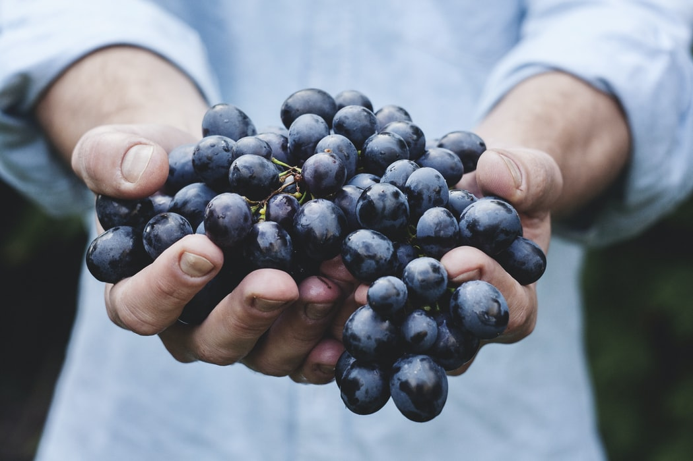

 White organic grapes are an unusual new hybrid variety developed over eight years by breeding wild grape species. As its name implies this grape has a distinctive flavour that does, remarkably, taste very much like the spun sugar confection. This is not a genetically engineered product; but rather a tedious hand-pollination process was employed that resulted over many seasons. LoFood organic black seedless grapes are grown in a micro-climate vineyard. Of course, grapes deliver great health benefits; they are a good source of dietary fibre and are naturally fat-free. These black grapes are even better because they are specifically designed to produce a better-tasting and larger-sized grape than their conventional counterparts. The secret is that the grapes are grown on a high trellis system which allows the grapes to get more sunlight for better growth and higher sugar levels. In order to ensure consistent production and high-quality fruit, our growers go through a labor-intensive process of hand pruning, cleaning, and harvesting. Black seedless grapes are delicious eaten raw or added as a fresh supplement to desserts, mixed vegetables, and meats. They are equally delicious in hot dishes after being microwaved, baked, or heated in sauces. Choose grapes that have no shattered fruit or dried out stems, which should be bright and pliable. Store grapes wrapped in a paper towel in a plastic bag for up to three days in the refrigerator. At Gally’s Farms, we defend a link with the nature. Our point of view is simple: the nature does well, we need to do the rest. We cultivate our products and invent our services which permitted to the city and its inhabitants to preserve a precious link with the benefits of a natural environment. We have a stock farming, a dairy, and a fruit and vegetable pick-your-own. Everything we produce is organic without the use of pesticides of any kind.
Order Now!
| Name | Description | Price | Quantity (Kg) |
|---|---|---|---|
| White grapes | From Gally's Farms. | 5€/kg | |
| Black grapes | From Gally's Farms. | 4.50€/kg | |